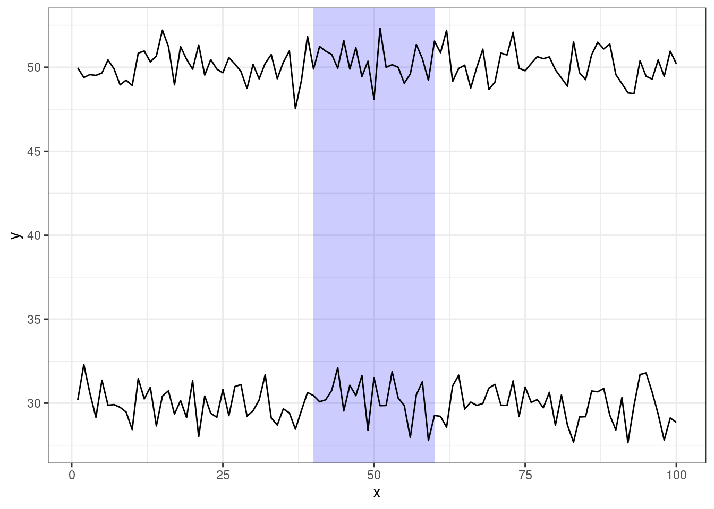

Topic 6 Plotting
6.1 Highlighting a range of x-values on a plot
Sometimes you want to highlight a particular range of values; for example, a particular period of time in a time series.
The code below is used to create the following plot.

Figure 6.1: A time series with x = 40-60 highlighted
library("tidyverse")
## make up some example data
exdata <- tibble(x = rep(1:100, 2),
series = rep(1:2, each = 100),
y = rnorm(200) + rep(c(30, 50), each = 100))
## region we want to highlight
regions <- tibble(x1 = 40, x2 = 60, y1 = -Inf, y2 = +Inf)
ggplot(exdata, aes(x, y)) +
geom_rect(data = regions,
inherit.aes = FALSE,
mapping = aes(xmin = x1, xmax = x2,
ymin = y1, ymax = y2),
color = "transparent",
fill = "blue",
alpha = .2) +
geom_line(aes(group = series))March 23, 2020. -DB